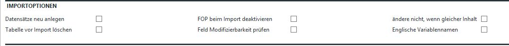

Aufbau der Import-Datei
!! Achtung es wird nur die erste Tabelle des Excel-Sheet ausgewertet.

Feldbeschreibungen
Datenbank:Gruppe
In dem Feld "Datenbank:Gruppe" (Feld 1:A) wird die Datenbank mit der entsprechenden Gruppe angegeben.
z.B.: "Teil:Artikel" oder "2:1" Alternativ kann auch das Tipp-Kommando als Nummer angegeben werden.Tabelle ab Spalte
In diesem Feld wird angegeben,ab welcher Spalte Tabelledaten vorhanden sind.Optionscode
In Zeile1/Spalte C kann ein Optionscode angegeben werden. Dieser belegt dieFeldnamen
In Zeile2 ab SpalteB werden die Feldnamen der abas Felder darunterfolgendenFeldname@feldoption
An den Feldnamen kann eine Feldoption angefügt werden.- @notempty:
Wenn diese Option an den Feldnamen angehängt ist, wird zuerst geprüft, ob der zu schreibende Wert leer ist.
Wenn Wert leer ist, wird kein Wert in dieses Feld geschrieben.
Damit kann man das unbeabsichtigte löschen von Feldern verhindern.
- @modifiable:
Wenn die Option "@modifiable" gesetzt wird, wird vor dem Beschreiben des Feldes geprüft, ob das Feld beschreibbar ist.
Ist das Feld nicht beschreibbar, kommt es ohne diese Option zum Fehler beim Schreiben des Datensatzes
- @skip:
Ist die Option "@skip" angegeben wird die komplette Spalte ignoriert.
- @Schlüssel:
Über den hier definierten Feldnamen wird in der Datenbank
nach einem schon existierenden Datensatz gesucht. Mit "@" kann für diese
Datenselektion ein Schlüssel mitgegeben werden.
- @dontChangeIfEqual:
Mit der Option "@dontChangeIfEqual" wird für die markierten Felder das Verhalten des STORE-MODUS simuliert.
Wenn das zu beschreibende Feld, den gleichen Inhalt hat wie der zu schreibende Wert, wird das Feld nicht neu beschrieben.
Wert1 - Daten:
Ab der 3.Zeile werden die Daten eingetragen. Die Daten müssen abas konform
vorhanden sein. Ein "." in einem Datumsfeld bewirkt also den Eintrag des
Tagesdatums im Datensatz in abas-ERP. Wird ein Datum mit 4 stelliger Jahreszahl
dargestellt, in abas ist das Datenfeld aber mit 2-stelliger Jahreszahl definiert
so scheitert der Import. Mehrzeilige Texte werden abas konform behandelt, das heißt
ein Zeilenvorschub wird mit ";" im Text erreicht.
Die Zählung beginnt hierbei ab 1. Ist also in der Spalte "E" der erste Wert für
ein Tabellenfeld vorhanden, so wird diese Zelle mit 5 beschrieben. Sind keine
Tabellenfelder zu importieren, so muß das Feld mit 0 beschrieben werden.
Importoptionen des Infosystems vor. Die verschiedenen Optionen werden unten beschrieben.
Daten deklariert. Das heißt diese Zeile ist zugleich die Schlüsselung der
Daten zu abas Feldern und zugleich stellt Sie die Reihenfolge des Datenimports
dar.
Diese Optionen verändern das Verhalten beim Schreiben dieses Feldes.
Folgende Feldoptionen sind verfügbar:
Importoptionen
Über die Importoptionen kann der Importprozess gesteuert werden.Diese Optionen gelten für alle Felder und alle Datensätze.
Für die verschiedenen ausgewählten Optionen wird ein Optionscode ermittelt,
dieser kann in die ExcelTabelle eingetragen werden.

Datensätze neu anlegen:
Mit dieser Option wird keine Datenselektion vor dem
Import durchgeführt. Jeder Datensatz wird neu angelegt.FOP deaktivieren:
Beim Import werden EFOPS in den Zielmasken ausgeschaltet.Tabelle löschen:
Dieser Kenner bewirkt ein Löschen der Tabelle der betroffenen
Datensätze bevor der Datenimport beginnt.Feld Modifizierbarkeit prüfen:
Vor dem Beschreiben der Felder wird geprüft, ob das Feld änderbar ist.
Wenn nicht wird das Feld ignoriert.Englische Variablen:
Wenn diese Option gesetzt ist, werden die englischen Variablenname ausgewertet.ändere nicht, wenn gleicher Inhalt
Mit dieser Option "@dontChangeIfEqual" wird für alle Felder das Verhalten des STORE-MODUS simuliert.
Wenn das zu beschreibende Feld, den gleichen Inhalt hat wie der zu schreibende Wert,
wird das Feld nicht neu beschrieben.
Fehleranzeige
Wenn bei der Verarbeitung ein Fehler auftritt, wird dieser in den Felder "Fehler in ..." angezeigt. Über den Kenner "nur fehlerhafte Datensätze anzeigen" und den Button "Daten in die Tabelle laden"
Über den Kenner "nur fehlerhafte Datensätze anzeigen" und den Button "Daten in die Tabelle laden"können die fehlerhaften Datensätze in der Tabelle angezeigt werden. Über den Button Analyse kann das Fehlerprotokoll angezeigt werden.

sonstige Felder

Datenbank
Im Feld Datenbank wird die aus der Exceldatei gelesene Datenbank zur Kontrolle dargestellt.Gruppe
In diesem Feld wird die aus der Exceldatei gelesene Datenbankgruppe
zur Kontrolle dargestellt.Tippkommando
In diesem Feld wird das aus der Exceltabelle gelesene Tippkommando dargestellt.Tabellendaten ab Spalte
In diesem Feld wird angezeigt ab welcher Spalte die Tabellenfelder beginnen.Optionscode
In diesem Feld wird der durch die Auswahl der Optionen errechnete Optionscode angezeigt.